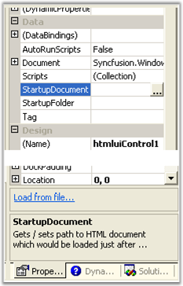
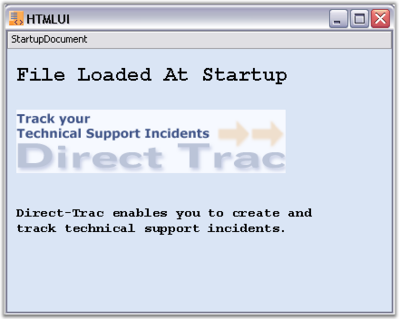

There may be situations where the HTML document is to be loaded initially at startup. An HTML document is loaded at startup for the front page applications. It may be an introductory page or a page that contains information regarding forthcoming pages. An HTML document can be loaded at Startup by two ways:
· Using the Properties window
· Coding
Using the Properties window involves specifying the location of the Startup HTML file in the StartupDocument property available within the properties window for the HTMLUI control or by clicking the link Load from file shown at the bottom of the properties window.

Figure 12: HTMLUI Properties Grid
While coding for the Startup Document, it should be written in the form_load event that is handled before the form is displayed for the first time.
|
[C#]
// Get or Set the path to the Startup Document for the control. private void Form1_Load(object sender, System.EventArgs e) { this.htmluiControl1.StartupDocument = @"C:\MyProjects\Startup\startup_page.htm"; } |
|
[VB.NET]
' Get/Set the path to the Startup Document for the control. Private Sub Form1_Load(ByVal sender As Object, ByVal e As System.EventArgs) Me.htmluiControl1.StartupDocument = "C:\MyProjects\Startup\startup_page.htm" End Sub |
The following image illustrates Loading an HTML document as the Startup Document.

Figure 13: Loading an HTML document as the Startup Document
 Startup File
Sample
Startup File
Sample